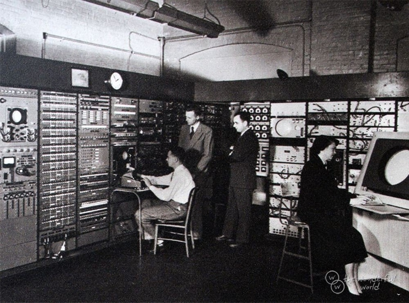

To start off what Arpanet stands for is the Advanced Research Projects Agency Network, what it was, was the first wide-area packet-switched network with distributed control and one of the first networks to implement the TCP/IP protocol suite. With bothe of these types of technology being used on what we now would be referring to the internet.
This whole project was being funded by the United States Department of Defence all the way back in 1965. The main goal of this project was to create a network without computers being connected to dedicated phones. A really big reason on why the Arpanet project was so important was because it was the first public packet-switched computer network. The main purpose of Arpanet was for mainly academic and research purposes.
Arpanet was formally decommissioned in the 1990’s, after the partnerships with the telecommunication and computer industry had assured private sector expansion and future commercialization of an expanded world-wide network, known as the Internet. So it got outclased.